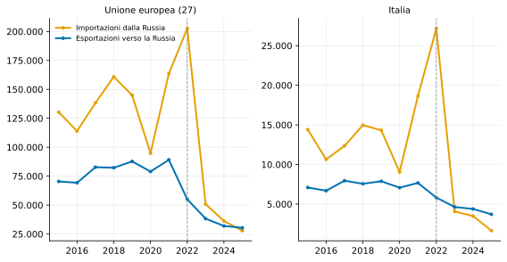
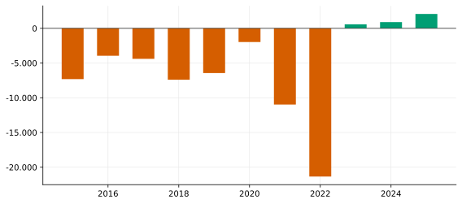
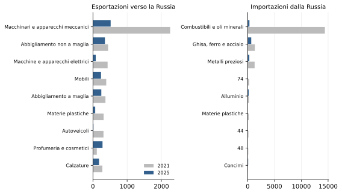
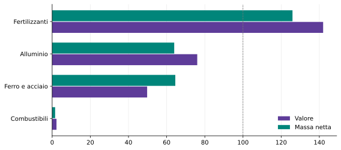
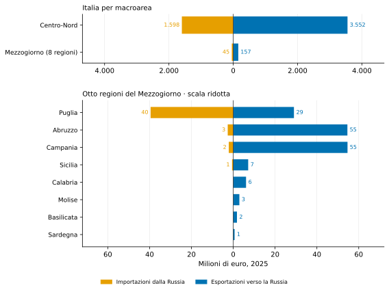
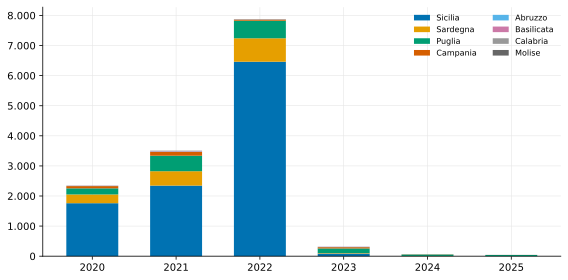
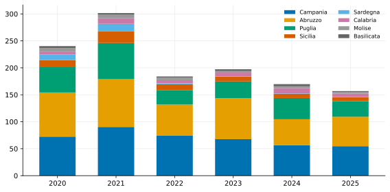
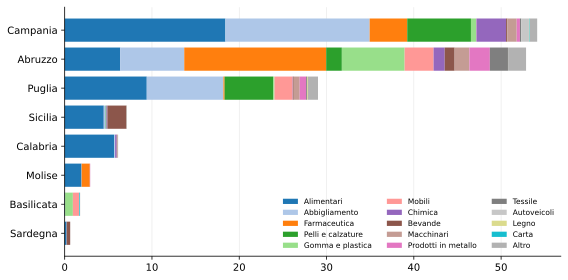
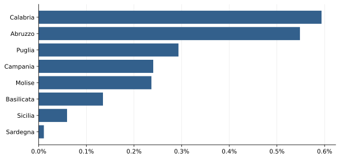
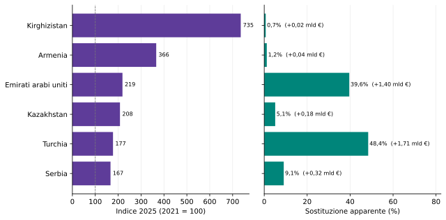

L’Italia, il Mezzogiorno e la Russia sotto sanzioni
Che cosa resta dell’interscambio di beni dopo i pacchetti restrittivi del 2022-2026
Paolo Volterra ![]()
Dopo l’invasione dell’Ucraina del febbraio 2022 l’Unione europea ha adottato ventuno pacchetti di misure restrittive che comprendono divieti settoriali all’importazione e all’esportazione di beni verso la Federazione Russa. Il documento esamina come è cambiato l’interscambio dell’Unione, dell’Italia e delle otto regioni del Mezzogiorno a partire dai dati doganali. Su base Eurostat, tra il 2021 e il 2025 sia le esportazioni italiane di beni verso la Russia sia, in misura molto maggiore, le importazioni si sono ridotte: il saldo bilaterale, storicamente in forte disavanzo per la bolletta energetica, si è capovolto in un avanzo di natura aritmetica, originato dal taglio degli acquisti fossili russi e non da una maggiore penetrazione delle merci italiane. L’export che resiste è concentrato soprattutto nei prodotti farmaceutici e alimentari e nei beni di consumo non colpiti dai divieti merceologici applicabili. Per il Mezzogiorno l’esposizione rilevante era l’importazione di greggio e di input siderurgici: al massimo del 2022 le otto regioni valevano poco meno di un terzo delle importazioni italiane dalla Russia; dal 2023 questo flusso si è fortemente ridotto. L’esportazione del Sud verso la Russia è rimasta marginale nel periodo osservato e si è contratta insieme a quella nazionale.
Russia, Unione europea, sanzioni, embargo, interscambio, Mezzogiorno, commercio estero, energia
Versione citabile su Zenodo, con il PDF: doi.org/10.5281/zenodo.22639148.
Documento di lavoro, versione 1.0.0. Identificatore permanente (DOI di concetto Zenodo, sempre riferito all’ultima versione): 10.5281/zenodo.22639148. Codici JEL: F14, F51, Q37, R11. ORCID dell’autore: 0009-0004-2229-7519.
1 Il regime delle sanzioni sui beni
A partire dal febbraio 2022 l’Unione europea ha adottato in successione ventuno pacchetti di misure restrittive nei confronti della Federazione Russa, l’ultimo dei quali nel luglio 2026 [1]. Accanto alle misure individuali e a quelle finanziarie, i pacchetti hanno introdotto divieti settoriali che riguardano direttamente lo scambio di merci e ne modificano la composizione [2].
Dal lato delle importazioni europee, i divieti hanno colpito in sequenza il carbone (in vigore dall’agosto 2022), il petrolio greggio trasportato via mare (dicembre 2022) e i prodotti raffinati (febbraio 2023), quindi l’acciaio e i prodotti siderurgici, l’oro, i diamanti, il legno, il cemento, alcuni prodotti chimici, l’alluminio primario e infine, con il diciannovesimo pacchetto dell’ottobre 2025, il gas naturale liquefatto, la cui importazione cessa nell’aprile 2026 e, per i contratti di lungo periodo, nel gennaio 2027 [3].
Dal lato delle esportazioni, i divieti riguardano i beni a duplice uso e le tecnologie avanzate, i beni di lusso di valore unitario superiore a 300 euro, la componentistica aeronautica e spaziale, i semiconduttori, un ampio elenco di macchinari e di beni intermedi individuati come utili al rafforzamento della capacità industriale o militare russa. Il ventesimo pacchetto, dell’aprile 2026, ha aggiunto ulteriori prodotti chimici, lubrificanti e vetreria da laboratorio, per un valore stimato superiore a 360 milioni di euro. Il ventunesimo, adottato nel luglio 2026, ha inasprito soprattutto le misure finanziarie, energetiche e anti-elusione e ha esteso le restrizioni all’esportazione verso altre 51 entità [4], [5].
I divieti merceologici sono costruiti in modo da preservare, in larga parte, i beni destinati al consumo e quelli legati a salute, farmaceutica, alimentazione e agricoltura. La disciplina non coincide tuttavia con un’esenzione automatica di interi capitoli doganali: legalità e autorizzazioni dipendono dal codice merce dettagliato, dall’uso finale, dal destinatario e dalla controparte. Anche alcuni fertilizzanti sono soggetti dal 2025 a dazi e controlli, pur senza un divieto generale. Il Regolamento (UE) 2026/261 ha introdotto un phase-out vincolante anche per il gas russo via gasdotto, con scadenze differenziate per natura e data dei contratti: per i contratti preesistenti di breve durata il divieto opera dal 25 aprile 2026 per il GNL e dal 17 giugno 2026 per il gas via tubo; per quelli di lungo periodo dal 1° gennaio 2027 per il GNL e dal 30 settembre 2027 — al più tardi 1° novembre 2027 — per il gas via tubo [6], [7]. Sono inoltre ammesse le transazioni di chiusura dei contratti in essere entro le scadenze fissate da ciascun pacchetto. La distinzione tra ciò che è vietato, autorizzabile o non colpito dai divieti contribuisce a spiegare la composizione dei flussi che sopravvivono, esaminata nelle sezioni seguenti.
1.1 Quando sono entrati in vigore i principali divieti
La data del pacchetto e quella in cui il divieto produce effetti non sempre coincidono. Per leggere correttamente le serie annuali sono particolarmente rilevanti i passaggi seguenti [1]:
| Entrata in vigore | Misura con maggiore effetto sui beni osservati |
|---|---|
| agosto 2022 | divieto di importazione del carbone russo |
| 5 dicembre 2022 | divieto del greggio russo trasportato via mare, con eccezioni circoscritte |
| 5 febbraio 2023 | divieto dei prodotti petroliferi raffinati russi |
| 2025–2026 | restrizioni progressive su alluminio, fertilizzanti e ulteriori prodotti industriali |
| 25 aprile 2026–1 gennaio 2027 | cessazione dell’import di GNL, prima per i contratti brevi e poi per quelli di lungo periodo |
| 17 giugno 2026–30 settembre 2027 | cessazione graduale dell’import di gas via tubo; termine differibile al 1° novembre 2027 per alcuni contratti di lungo periodo |
Le discontinuità più nette nelle importazioni italiane e meridionali compaiono quindi nel 2023, primo anno interamente interessato dai divieti sul greggio via mare e sui raffinati.
1.2 Come leggere il regime delle merci osservate
| Merce osservata | Evidenza 2021–2025 | Regime indicativo | Verifica necessaria |
|---|---|---|---|
| Farmaceutici | crescita | beni sanitari generalmente preservati | codice CN, destinatario e controparte |
| Alimentari e bevande | tenuta differenziata | beni alimentari generalmente preservati | singolo prodotto e soggetti coinvolti |
| Moda, cosmetici e arredo | flussi ancora rilevanti | possibili restrizioni sui beni di lusso | voce dell’Annex XVIII e valore unitario |
| Macchinari ed elettronica | forte contrazione | numerosi codici vietati o controllati | CN8, uso finale e rischio di triangolazione |
| Ferro, acciaio e alluminio | import residuo | divieti, eccezioni e contingenti transitori | CN8, origine e periodo applicabile |
| Fertilizzanti | crescita di valore e quantità | nessun divieto totale; dazi e controlli su alcune voci | composizione CN8 e disciplina vigente |
La matrice è orientativa: nessuna riga sostituisce lo screening legale della singola operazione. L’analisi che segue lavora su capitoli della Nomenclatura combinata a due cifre per l’Italia e su sezioni e divisioni della classificazione CPA per il Mezzogiorno: nessuno dei due livelli identifica i codici doganali a otto cifre sui quali operano i divieti, e serve quindi a descrivere le dinamiche, non a stabilire la liceità di una spedizione.
2 L’interscambio dell’Unione europea con la Russia

Figura 1: Interscambio di beni con la Federazione Russa. Valori annuali in milioni di euro. Fonte: elaborazione su Eurostat, statistiche del commercio estero (COMEXT).
I dati doganali sull’interscambio di beni per Paese partner e categoria di prodotto sono pubblicati da Eurostat nella banca dati del commercio estero, con dettaglio annuale per capitolo della Nomenclatura combinata e dettaglio mensile per sezione della classificazione SITC [8], [9].
Nel 2021, ultimo anno pieno prima dell’invasione, l’Unione europea a 27 ha importato beni dalla Russia per circa 164 miliardi di euro ed esportato per circa 89 miliardi. Nel 2022 le importazioni sono salite a 203 miliardi, in concomitanza con il rincaro dei prezzi dell’energia, mentre le esportazioni erano già in calo. Nel 2025 le importazioni europee dalla Russia sono scese a circa 28 miliardi e le esportazioni a circa 30 miliardi: un calo, rispetto al 2021, di circa 83 per cento sull’import e di circa 66 per cento sull’export. Nel 2025, per la prima volta nella serie Eurostat disponibile dal 2002, la bilancia commerciale dell’Unione con la Russia si chiude in avanzo.
L’importazione europea residua resta concentrata nei combustibili minerali, che nel 2025 valgono ancora 17,4 miliardi di euro: il capitolo comprende soprattutto gas trasportato tramite gasdotto e gas naturale liquefatto, oltre a flussi residui di altri prodotti energetici. Seguono, molto distanziati, il ferro e l’acciaio, i fertilizzanti — che crescono rispetto al 2021 — il nichel e i prodotti della pesca. L’esportazione europea verso la Russia è invece guidata dai prodotti farmaceutici, che da soli valgono nel 2025 circa 9,7 miliardi di euro, pari al 32 per cento del totale, seguiti da strumenti medicali, profumeria e cosmetici, prodotti chimici, cacao e bevande.
3 L’Italia: importazione quasi azzerata, esportazione dimezzata

Figura 2: Italia: saldo commerciale bilaterale con la Federazione Russa. Valori annuali in milioni di euro; il saldo è la differenza tra esportazioni e importazioni. Fonte: elaborazione su Eurostat (COMEXT).
Tra il 2021 e il 2025 le esportazioni italiane di beni verso la Russia sono passate da 7,7 miliardi di euro a 3,7 miliardi, con una riduzione di circa 52 per cento. La contrazione è stata graduale: dopo la caduta del 2022 il valore si è stabilizzato attorno a 4,2 miliardi l’anno in media fra il 2023 e il 2025. Il confronto infrannuale omogeneo indica una prosecuzione della discesa: fra gennaio e giugno 2026 le esportazioni cumulate sono state di 1,68 miliardi di euro, il 4,1 per cento in meno rispetto allo stesso periodo del 2025. L’estratto COMEXT usato nel render è aggiornato al 14 agosto 2026.
Le importazioni italiane dalla Russia sono invece crollate da 18,6 miliardi del 2021 — saliti a 27,2 miliardi nel 2022, in concomitanza con il rincaro energetico — a 1,6 miliardi del 2025, una riduzione di circa 91 per cento rispetto al 2021. Il calo si concentra quasi interamente nei combustibili e oli minerali, che valevano 14,4 miliardi di euro nel 2021 e 328 milioni nel 2025.
L’effetto congiunto è il capovolgimento del saldo bilaterale: l’Italia, in disavanzo verso la Russia per 11 miliardi di euro nel 2021 a causa della bolletta energetica, registra nel 2025 un avanzo di circa 2,1 miliardi. Non perché l’Italia venda di più, ma perché ha quasi azzerato gli acquisti di energia russa. Si tratta di un avanzo di natura aritmetica: il saldo attivo non esprime una maggiore penetrazione commerciale delle esportazioni nazionali, ma l’effetto algebrico della forte contrazione delle importazioni dirette di combustibili dalla Federazione Russa. Il dato bilaterale non misura però né la spesa energetica complessiva dell’Italia né prezzi e costi delle forniture alternative: il suo capovolgimento non può quindi essere interpretato, da solo, come un beneficio macroeconomico.
4 Che cosa continua a essere scambiato

Figura 3: Italia: interscambio con la Russia per capitolo della Nomenclatura combinata, confronto 2021-2025. Valori in milioni di euro, principali capitoli. Fonte: elaborazione su Eurostat (COMEXT).
Sul lato dell’esportazione, i comparti che si riducono di più tra il 2021 e il 2025 sono i macchinari e gli apparecchi meccanici (da 2,3 miliardi a 518 milioni di euro), le macchine e gli apparecchi elettrici, le materie plastiche e i prodotti siderurgici, tutti in calo di circa quattro quinti: comprendono categorie interessate dai divieti all’esportazione perché considerate utili alla capacità industriale russa. I comparti che invece tengono, o crescono, comprendono categorie in larga parte preservate per finalità sanitarie o alimentari, oppure non colpite dai divieti merceologici applicabili: i prodotti farmaceutici (in aumento del 41 per cento rispetto al 2021), la profumeria e i cosmetici (in aumento del 148 per cento), le bevande, il cacao, e i beni di consumo del sistema moda — abbigliamento, calzature — e dell’arredamento, in calo ma su valori ancora significativi.
La tenuta complessiva dell’export italiano a circa 3,7 miliardi di euro nel 2025 (in media 309 milioni al mese) mostra come l’interscambio non sia affatto azzerato, ma si sia polarizzato lungo tre canali distinti:
| Dinamica prevalente | Capitoli CN rappresentativi | Variazione 2021–2025 | Inquadramento orientativo |
|---|---|---|---|
| Forte contrazione dei beni industriali | Macchinari (84), elettrico (85), metallurgia (72-73), auto (87) | Crollo (−75% / −85%) | Capitoli che comprendono numerose voci vietate o controllate; verifica necessaria a CN8 |
| Tenuta di beni sanitari e alimentari | Farmaceutici (30), cacao (18), bevande (22) | Crescita o tenuta differenziata | Molte voci restano commerciabili, ma non esiste un’esenzione automatica dell’intero capitolo |
| Persistenza dei beni di consumo | Cosmetici (33), tessile e moda (61-62), calzature (64), arredo (94) | Forte crescita dei cosmetici, calo parziale della moda | Possibili restrizioni dell’Annex XVIII: soglia generalmente pari a 300 euro per articolo, salvo diversa previsione |
La classificazione descrive dinamiche aggregate, non la liceità della singola spedizione: questa dipende dalla voce CN dettagliata, dall’uso finale, dal destinatario, dalla controparte e dalle soglie o autorizzazioni applicabili [2].
Sul lato dell’importazione, oltre alla scomparsa dell’energia, si riducono fortemente i metalli preziosi, il rame e la chimica. Restano attivi, su valori contenuti, il ferro e l’acciaio — per alcune categorie ammesso entro contingenti transitori — l’alluminio e i concimi. Il comparto dei fertilizzanti costituisce un’eccezione rilevante: l’importazione italiana cresce del 42,0 per cento in valore nel periodo considerato e del 25,9 per cento in massa fisica. In larga parte preservati per non compromettere le rese agronomiche e la produzione agricola europea, dal 2025 alcuni fertilizzanti russi sono stati assoggettati a dazi e a monitoraggio. L’aumento tariffario è graduale, su un periodo transitorio di tre anni, e mira a ridurre la dipendenza europea e le entrate russe senza interrompere bruscamente le forniture [10].
4.1 Valore, quantità e prezzo implicito
Il valore corrente può cambiare perché varia la quantità scambiata, il prezzo unitario o entrambi. Per quattro capitoli rilevanti è quindi utile affiancare al valore la massa netta registrata da COMEXT.

Figura 4: Italia: importazioni dalla Russia per valore e massa netta, 2021 e 2025. Numeri indice, 2021=100. Il valore unitario è il rapporto tra valore doganale e massa. Fonte: elaborazione su Eurostat (COMEXT).
Il collasso dei combustibili è anche quantitativo: tra il 2021 e il 2025 il valore scende del 97,7 per cento e la massa del 98,4 per cento. Per i fertilizzanti, invece, il valore cresce del 42,0 per cento e la massa del 25,9: una parte dell’aumento nominale riflette quindi un valore medio per chilogrammo più elevato. Il valore unitario dei concimi è sensibile alle quotazioni del gas naturale, che è la principale materia prima e voce di costo nella sintesi dell’ammoniaca e dei composti azotati. Nel ferro e acciaio la massa diminuisce del 35,5 per cento, meno del valore (−50,2), mentre per l’alluminio accade il contrario: massa −36,0 per cento e valore −24,0. Le variazioni del valore unitario sono indicatori sintetici e non prezzi omogenei, perché ciascun capitolo comprende prodotti differenti.
5 Il Mezzogiorno: la partita era l’energia
Il confronto territoriale può essere ricomposto senza introdurre una classificazione aggiuntiva: il Centro-Nord è calcolato come differenza tra il totale italiano rilevato da Eurostat e la somma ISTAT delle otto regioni del Mezzogiorno; essendo un residuo tra due fonti statistiche, il suo valore va letto come ordine di grandezza. Il grafico seguente mette a confronto i due versi dello scambio nel 2025, prima per macroarea e poi per singola regione meridionale, su due scale distinte.

Figura 5: Italia e Federazione Russa: importazioni ed esportazioni di beni nel 2025, per macroarea (pannello superiore, scala nazionale) e per regione del Mezzogiorno (pannello inferiore, scala regionale, molto più piccola). Barre a sinistra dello zero: importazioni dalla Russia; a destra: esportazioni verso la Russia. Valori in milioni di euro. Il Centro-Nord è il residuo tra il totale nazionale Eurostat e le otto regioni ISTAT. Fonte: elaborazione su Eurostat COMEXT e ISTAT Coeweb.
Nel 2025 il Centro-Nord concentra il 95,8 per cento dell’export italiano verso la Russia e il 97,3 per cento dell’import. Il grafico rende immediatamente visibile questa asimmetria senza eliminare il dettaglio delle otto regioni meridionali, sviluppato nei grafici successivi.

Figura 6: Otto regioni del Mezzogiorno: importazioni di beni dalla Russia per regione. Valori annuali in milioni di euro. Fonte: elaborazione su ISTAT, statistiche del commercio estero regionale.
Il dettaglio regionale dell’interscambio, per sezione e divisione di attività economica e per Paese partner, è pubblicato dall’ISTAT nelle statistiche del commercio estero [11].
Nel periodo 2020–2025 la relazione commerciale del Mezzogiorno con la Russia è stata soprattutto una relazione di importazione, e in particolare di importazione di materie prime energetiche. Al massimo del 2022 le otto regioni hanno importato dalla Russia beni per circa 7,9 miliardi di euro, pari a circa 29 per cento dell’intera importazione italiana dalla Russia di quell’anno. Il flusso era concentrato in tre poli:
- la Sicilia, con circa 6,5 miliardi di euro, un flusso di prodotti estrattivi compatibile con l’approvvigionamento della raffineria di Priolo;
- la Sardegna, con circa 779 milioni di euro, in larga parte prodotti estrattivi compatibili con l’approvvigionamento della raffineria di Sarroch;
- la Puglia, con flussi di minerali, carbone e coke compatibili con il polo siderurgico di Taranto.
Con l’entrata in vigore dell’embargo sul greggio via mare e sul carbone, questi flussi regionali si sono quasi interrotti. Nel 2025 l’importazione delle otto regioni dalla Russia è stata di circa 45 milioni di euro, il 98,7 per cento in meno rispetto al 2021. L’esposizione più consistente del Mezzogiorno alla Russia è stata quindi recisa quasi per intero; il tema per il Sud non è stato la perdita di un mercato di sbocco, ma la necessità per le raffinerie di riorientare l’approvvigionamento verso altri fornitori.
6 Che cosa vende ancora il Sud

Figura 7: Otto regioni del Mezzogiorno: esportazioni di beni verso la Russia per regione. Valori annuali in milioni di euro. Fonte: elaborazione su ISTAT, statistiche del commercio estero regionale.

Figura 8: Otto regioni del Mezzogiorno: esportazioni verso la Russia nel 2025, per regione e divisione di attività economica. Valori in milioni di euro; le divisioni con flusso trascurabile sono aggregate in «Altro». Fonte: elaborazione su ISTAT, statistiche del commercio estero regionale.
Nel periodo 2020–2025 l’esportazione del Mezzogiorno verso la Russia è stata marginale: al massimo del 2021 valeva circa 302 milioni di euro, pari al 3,9 per cento dell’esportazione nazionale verso la Russia. Il mercato russo, come sbocco per i beni italiani, è stato nel periodo osservato soprattutto uno sbocco delle regioni del Nord, specializzate nei macchinari e nel sistema moda. Nel 2025 l’esportazione delle otto regioni si è ridotta a circa 157 milioni di euro — circa 4,2 per cento del totale nazionale, quota sostanzialmente invariata rispetto al 2021: il Sud ha perso terreno come il resto del Paese, non più del resto del Paese. La contrazione ha inoltre riguardato in misura simile le regioni che concentravano il flusso: tra il 2021 e il 2025 l’esportazione verso la Russia si riduce del 39 per cento in Campania, del 38 per cento in Abruzzo e del 57 per cento in Puglia; la geografia dell’export meridionale verso la Russia resta quindi la stessa, solo su valori dimezzati.
La quota del Sud sull’export italiano verso la Russia descrive dove si concentrano le vendite italiane, ma non misura quanto ciascuna economia regionale dipenda dal mercato russo. Per questo occorre rapportare il flusso verso la Russia all’intero export mondiale della regione.

Figura 9: Esportazioni verso la Russia in rapporto alle esportazioni mondiali di ciascuna regione, 2025. Valori percentuali. Fonte: elaborazione su ISTAT, statistiche del commercio estero regionale.
Nel 2025 la Russia assorbe appena 0,24 per cento dell’export mondiale complessivo delle otto regioni. Anche nei casi relativamente più esposti — Calabria e Abruzzo — la quota non supera lo 0,59 per cento; in tutte le altre regioni resta sotto lo 0,29 per cento. Il dato conferma la limitata esposizione macroregionale, senza escludere concentrazioni molto maggiori per singole imprese o produzioni locali.
Quasi tutta l’esportazione residua è manifattura di beni di consumo, concentrata in tre regioni — Campania, Abruzzo e Puglia — che insieme valgono il 88 per cento del totale del Sud. Le divisioni principali sono gli alimentari, l’abbigliamento, le pelli e le calzature, i mobili e le bevande. A queste si aggiunge l’export farmaceutico dell’Abruzzo, pari a circa 16,3 milioni di euro nel 2025 e concentrato soprattutto nella provincia dell’Aquila, che ne rappresenta 12,6 milioni. Il flusso regionale è cresciuto in ciascun anno dal 2020 ed è coerente con la tutela riservata ai beni sanitari; i dati territoriali non consentono però di identificare le singole imprese esportatrici.
Sul lato dell’importazione, l’unico flusso ancora attivo di dimensione apprezzabile è un flusso di prodotti metallurgici russi registrato nelle province di Brindisi e Bari, per circa 39 milioni di euro nel 2025. Il profilo merceologico è compatibile con semilavorati siderurgici ammessi entro contingenti transitori, ma il dato territoriale non identifica gli stabilimenti acquirenti.
7 Flussi verso Paesi terzi e rischio di triangolazione
Il commercio diretto UE–Russia non comprende i beni europei eventualmente riesportati da altre economie. Lo screening è quindi ristretto ai 50 codici HS6 dei Common High Priority items (CHP) nella versione pubblicata dalla Commissione europea nel febbraio 2024, che li individua perché rinvenuti nei sistemi d’arma russi o critici per il loro sviluppo, produzione o impiego [12]; l’elenco è stato in seguito aggiornato e qui si usa quella versione. L’elenco è estratto automaticamente dal documento ufficiale: i codici non sono trascritti nel programma.
L’impostazione è sostenuta dalla letteratura, ma la formula sintetica qui adottata è una nostra costruzione descrittiva. Korhonen e Simola analizzano proprio beni tecnologici e CHP a HS6 con dati mensili mirror e differenze-in-differenze [13]. Chupilkin, Javorcik e Plekhanov confrontano, allo stesso dettaglio merceologico, il calo dell’export europeo diretto verso la Russia con l’aumento verso Armenia, Kazakhstan e Kirghizistan [14]. Quei lavori identificano gli effetti rispetto a gruppi di controllo; il nostro indicatore serve invece a ordinare rapidamente i casi da approfondire e non ha valore causale o probatorio.
Per ciascun Paese \(p\) sono riportati l’indice \(I_p=100\,X_{p,2025}/X_{p,2021}\) e il rapporto di sostituzione apparente \(S_p=100\,\max(0,X_{p,2025}-X_{p,2021})/(X_{RU,2021}-X_{RU,2025})\). Il numeratore misura l’incremento dell’export UE di CHP verso il Paese terzo; il denominatore, comune, il calo verso la Russia sul medesimo paniere. Il secondo rapporto non implica che le merci incrementali abbiano raggiunto la Russia.

Figura 10: UE-27: indicatore di rischio di diversione commerciale sui 50 Common High Priority items, 2021–2025. A sinistra, indice dell’export verso ciascun Paese (2021=100); a destra, incremento verso il Paese in rapporto al calo dell’export diretto verso la Russia. Lo screening non prova la riesportazione. Fonte: elaborazione su Commissione europea ed Eurostat COMEXT.
Sul paniere CHP l’export diretto UE verso la Russia si riduce di 3,52 miliardi di euro. Il maggiore aumento relativo riguarda Kirghizistan (indice 735), ma il maggiore incremento assoluto è verso Turchia: 1,71 miliardi, pari al 48,4 per cento del calo diretto. Turchia ed Emirati Arabi Uniti, i due hub marittimo-commerciali, da soli valgono circa 85 per cento dell’incremento aggregato verso le economie considerate: il grafico riporta accanto a ciascuna barra l’incremento assoluto in miliardi, perché la graduatoria relativa e quella assoluta portano a letture opposte — un indice elevato può nascere da una base minima, come per il Kirghizistan. Domanda interna, prezzi, ricomposizione delle catene e vendite legittime restano spiegazioni concorrenti: il segnale deve essere verificato a CN8, impresa, spedizione e destinatario finale. L’estratto COMEXT dei Common High Priority items usato nel grafico è aggiornato al 14 agosto 2026.
8 Implicazioni
Per l’impresa esportatrice. Il mercato russo resta accessibile per beni non vietati o autorizzabili, previa verifica del codice doganale, dell’uso finale, del destinatario e della controparte. Anche per queste merci permangono ostacoli operativi rilevanti sul versante dei pagamenti e della logistica, legati all’esclusione di numerose banche russe dai circuiti di pagamento e ai controlli anti-elusione, estesi dal 2025 anche ad alcuni Paesi terzi. A questo si aggiunge la leva delle misure statunitensi: l’ordine esecutivo 14114 del dicembre 2023 autorizza sanzioni sulle banche di Paesi terzi che trattano operazioni collegate alla base militare-industriale russa [15]. La conseguente esposizione delle banche corrispondenti si traduce in una conformità cautelativa (over-compliance, o de-risking), per cui anche spedizioni di beni non soggetti a divieto possono incontrare rifiuti di pagamento o di intermediazione. La quota del Mezzogiorno in questo interscambio residuo rende improbabile un effetto macroregionale rilevante, pur senza escludere conseguenze concentrate su singole imprese o filiere.
Per l’approvvigionamento energetico. L’effetto rilevante per il Sud non è stato sul lato dell’export ma sulla sostituzione delle forniture russe di greggio, carbone e coke destinate ai poli energetici e siderurgici regionali. I dati commerciali documentano la caduta dei flussi, ma non consentono di misurarne direttamente l’effetto sui costi aziendali. La ricomposizione delle rotte di approvvigionamento di petrolio e gas dell’Italia e dell’Unione è un tema che eccede il perimetro di questo documento.
Per l’attività bancaria e la gestione dei rischi. I dati suggeriscono una gerarchia utile per l’istruttoria, senza sostituire la valutazione legale della singola operazione: il codice ATECO serve alla segmentazione del portafoglio, la voce doganale CN8 a verificare divieti e soglie — ma solo con uso finale e classificazione accertati — e i fattori soggettivi, logistici e finanziari completano il quadro (proprietà e controllo della controparte, destinazione reale della merce, banche del regolamento) [16]. In sintesi: la quota dello 0,24 per cento indica una bassa esposizione commerciale diretta ma non il rischio di credito, che dipende da concentrazione per debitore, effetti indiretti dei costi energetici e qualità degli attivi; la liceità merceologica non garantisce l’eseguibilità finanziaria dell’operazione; gli aumenti verso economie cerniera sono indicatori di rischio, non prove di riesportazione, e la clausola No-Russia è obbligatoria solo nel perimetro dell’art. 12 octies del Reg. 833/2014, fatte salve le eccezioni previste [17]. Quando costi e rischi di conformità superano la marginalità attesa, banca e impresa possono valutare mercati alternativi e strumenti di garanzia per l’internazionalizzazione.
9 Perimetro e limiti dell’evidenza
L’analisi riguarda il commercio dichiarato di beni. Non comprende servizi, investimenti diretti, partecipazioni e filiali, royalties, dismissioni societarie o flussi finanziari. Queste componenti possono essere economicamente rilevanti, ma richiedono fonti diverse dai dati doganali e non sono sommate ai valori presentati nel documento.
I dati annuali per capitolo doganale e per regione arrivano al 2025; la serie mensile dell’esportazione italiana è aggiornata a 14 agosto 2026 e usata solo per il confronto gennaio–giugno 2025 contro gennaio–giugno 2026. L’analisi nazionale è condotta sui capitoli della Nomenclatura combinata a due cifre, quella territoriale sulle sezioni e divisioni della classificazione CPA: livelli utili a descrivere la composizione, non a stabilire la disciplina sanzionatoria di una singola voce.
Nelle statistiche extra-UE il partner è il Paese di destinazione finale dichiarato per le esportazioni e il Paese di origine per le importazioni; le merci in semplice transito non sono registrate come scambio. Le esportazioni sono valutate FOB e le importazioni CIF. Nel dettaglio territoriale Coeweb, regione e provincia non identificano l’impresa, lo stabilimento, il proprietario o l’utilizzatore finale. Le celle di piccolo valore possono inoltre essere soppresse per riservatezza, soprattutto nei dati più recenti [11], [19].
Regole di origine e raffinazione in Paesi terzi. Le statistiche doganali dirette registrano il Paese di origine dichiarato per le importazioni e di destinazione per le esportazioni. In base alle regole di origine non preferenziale dell’Unione europea, una raffinazione realizzata in un Paese terzo può conferire ai prodotti ottenuti l’origine di quel Paese quando integra l’ultima trasformazione sostanziale ed economicamente giustificata richiesta dall’art. 60 del Codice doganale dell’Unione e dalle regole applicabili al prodotto. L’esito non è automatico e va verificato caso per caso; inoltre, una lavorazione finalizzata ad aggirare misure commerciali può non essere considerata economicamente giustificata. Nei casi in cui la nuova origine è acquisita, i derivati ottenuti da greggio russo in Paesi terzi non compaiono come importazioni di origine russa nelle statistiche bilaterali [20].
10 Riferimenti
Nota metodologica
Questo documento nasce dall’interazione di tre componenti. L’autore definisce le domande, esercita il giudizio critico e assume la responsabilità scientifica ed editoriale del risultato. Strumenti di intelligenza artificiale generativa sono impiegati a supporto della ricerca bibliografica, della lettura, della sintesi, della riorganizzazione argomentativa e della revisione del testo. Un’infrastruttura open source sviluppata dall’autore automatizza il reperimento, l’armonizzazione e il controllo dei dati dalle fonti statistiche ufficiali, e mantiene l’elaborazione documentata e riproducibile.
Le fonti sono pubblicamente accessibili e citate con la loro denominazione ufficiale; l’analisi è pertanto integralmente auditabile e replicabile da terzi a partire da esse. Le tabelle e i grafici sono elaborazioni dell’autore: calcoli, aggregazioni, trasformazioni e scelte di rappresentazione sono attribuibili all’autore e non agli enti produttori dei dati.
La responsabilità per le fonti utilizzate, le analisi condotte, le elaborazioni effettuate, le interpretazioni proposte e le conclusioni formulate resta interamente in capo all’autore. L’intelligenza artificiale è stata impiegata come ambiente di supporto cognitivo ed editoriale, non come fonte primaria, autore autonomo o sostituto del giudizio critico.
10.1 Riutilizzare
CC-BY-4.0